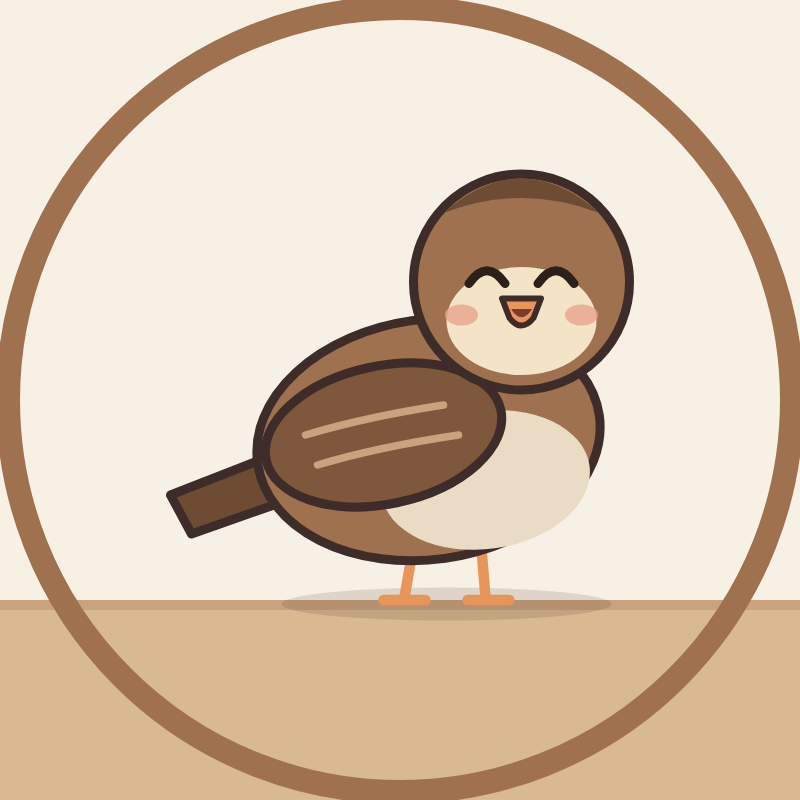

Pipit Learns
Last updated: 1 November 2026
This policy covers Pipit Learns Publisher, an internal tool used only by the owner of the Pipit Learns YouTube channel and the Belajar Bareng Pipit TikTok account to upload the channel's own videos.
What the tool accesses
With the owner's permission (Google OAuth and TikTok Login Kit), the tool uses the YouTube Data API to upload videos, captions and playlist entries to the owner's YouTube channel, and the TikTok Content Posting API to send videos to the owner's TikTok inbox as drafts. It does not read, collect or store data about any other person.
What is stored
The only data stored is the access credentials (OAuth refresh tokens) for the owner's own accounts, kept as private environment settings controlled by the owner, and a log of the IDs of videos the tool uploaded. Nothing is sold or shared with third parties.
Children
The videos are made for children, but the tool itself is used only by an adult channel owner. It does not collect any information from children or viewers.
Third-party services
The tool uses YouTube API Services. By using it, the owner agrees to the YouTube Terms of Service, and Google's handling of data is described in the Google Privacy Policy. TikTok's handling of data is described in the TikTok Privacy Policy.
Removing access
Access can be revoked at any time in the Google account settings at security.google.com/settings/security/permissions and in the TikTok app's security settings. Revoking access stops the tool from working; no data remains with the tool beyond the owner's own environment settings, which the owner can delete.
Contact
Questions about this policy: ivan.april24@gmail.com